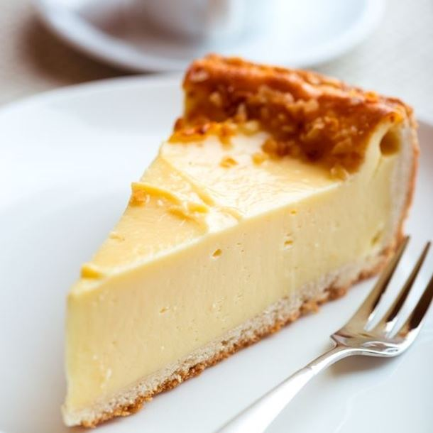

Le chocolat blanc
Le chocolat blanc est une jolie confiserie à la teinture blancheur laiteuse possédant un goût plus sucré et crémeux à la fois. En cuisine, il peut être dégusté en tablette, en poudre de chocolat ou d'ailleurs être utilisé en patisserie et décoration. De plus, il a la particularité d'être associé à de nombreuses saveurs fruitées tels que les fruits rouges, les fruits sec, la pistache ou d'autres fruits exotiques.
Tarte au chocolat blanc et aux fraises, pâte au chocolat blanc légère et savoureuse suivi d'une garniture de fraises.
Cheesecake au chocolat blanc ou gâteau au fromage, dessert sucré composé de fromage à la crème, d'oeufs et de vanille qui repose sur une croûte de miettes de biscuits.
Mousse riche au chocolat blanc, dessert déliceux après un gros repas avec de la crème fraiche liquide, sucre vanillé et qui s'accompagne avec des framboises, frases ou mirtilles.
Gâteau au chocolat blanc et au glaçage blanc, c'est un gâteau contenant du sucre glace et beaucoup de chocolat blanc, très consommé lors des anniversaires.
Muffins au chocolat blanc, gâteau classique et peu sucré qu'on déguste généralement au goûter.
Crumble au chocolat blanc, composé d'une couche de pâte émiettée ainsi qu'une couche de fruits situé dans le fond du plat. Il est très affectionnés par les amateurs de chocolat blanc.